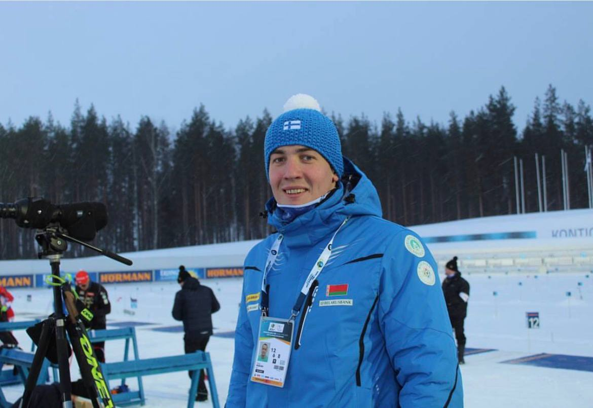
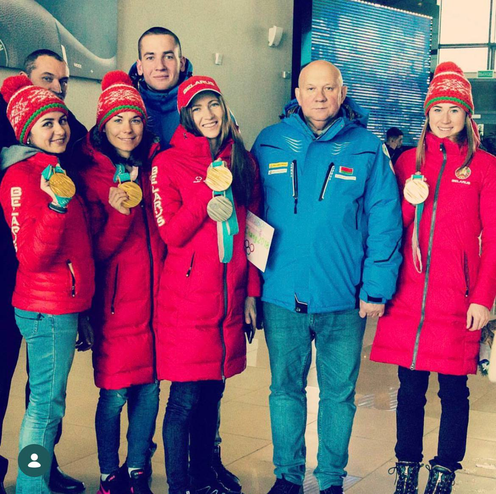
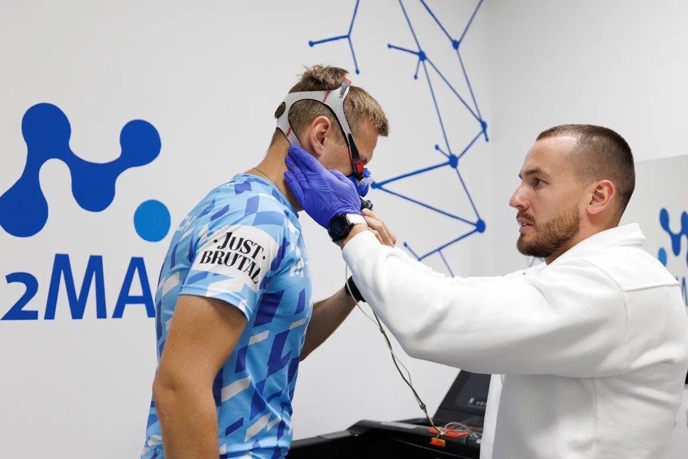
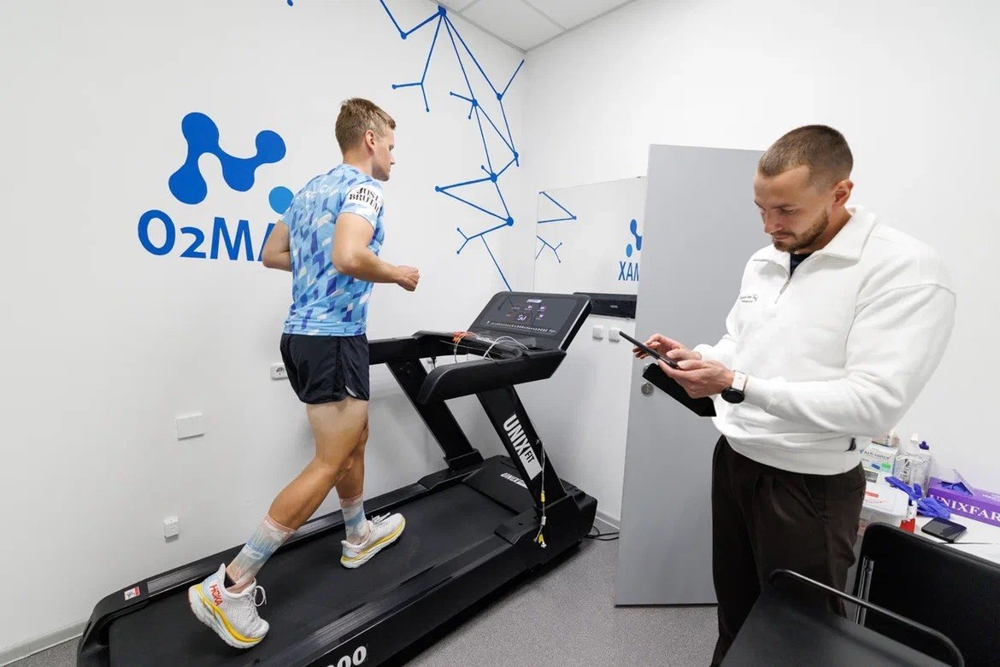
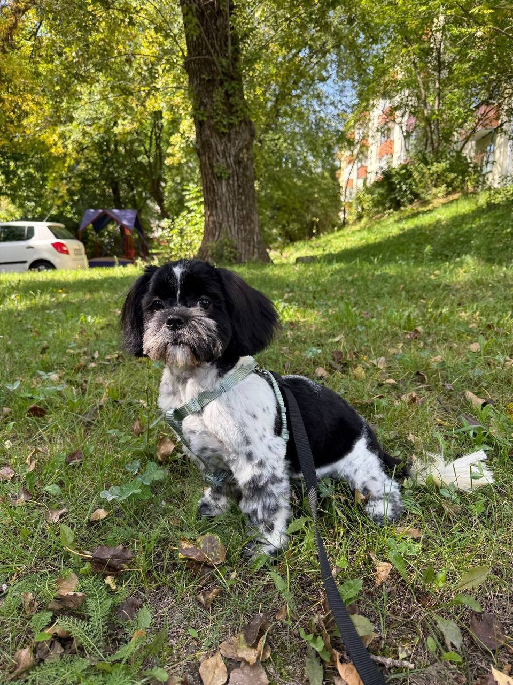

Имя — Павел Козлов. Для друзей — просто Паша. А для большинства знакомых в Get Contact — Паша Биатлон[4].
И да, это не опечатка. Я уже десятый год работаю в федерации биатлона с олимпийскими чемпионами. Хотя, по иронии судьбы, на лыжах стоять не умею. Но, как показала практика, для управления процессами в спорте высших достижений это не обязательно. Главное — правильно выстроить систему.


Своё первое «капиталовложение» я сделал ещё в детстве, когда променял компьютерные игры на секцию плавания. Это было рискованно, но окупилось сторицей. С тех пор я знаю: вода камень точит, а спорт — лучший инвестор в здоровье.
Какой я
Я многогранный. Не «разбрасывающийся», а именно многогранный — это разные слова, запомните. За плечами — БГУИР, специальность «айтишник». В те годы это звучало как анекдот: «айтишник, который не умеет кодить». Но, как показало время, я просто опередил тренды. Сегодня можно быть айтишником и не писать код — достаточно уметь объяснить нейросети, чего ты от неё хочешь.
При этом я человек воды: профессионально занимался плаванием, покорял водные дорожки. Если бы мне платили за каждый километр в бассейне, я бы уже давно вышел на пенсию. Но мне не платят, поэтому я просто называю это «инвестицией в здоровье» и продолжаю. Сейчас покоряю жизненные горизонты, веду активный образ жизни, потому что без движения — это просто застой. Каждая тренировка в моём графике — это не хобби и не рутина. Это образ жизни и моя главная инвестиция в себя.
Я — строитель империи. Не той, что из золота, а той, что из правильно выстроенных тренировочных процессов. Я развиваю собственный центр тестирования O2MAX на стыке науки, медицины и тренерского подхода. Мы не просто «даём советы» — мы фиксируем отклик организма под нагрузкой через дыхание, пульс и лактат в крови. Газоанализатор, датчики, заборы — в ход идёт всё. А цифры, как известно, не врут. В отличие от ощущений «мне кажется, я могу ещё».
Пока одни тренируются «на ощупь», мы превращаем спорт в точную науку. И да, я считаю это своим главным достижением.


Достижения
- Получил два образования[2], основное — БГУИР, специальность айтишника. Знания конвертировал в практику.
- Прошёл школу профессионального спорта (плавание). Выжил. Закалился.
- Работаю уже десятый год в федерации биатлона с олимпийскими чемпионами. Получил прозвище «Паша Биатлон», так и не встав на лыжи.
- Выстроил с нуля центр тестирования O2MAX, где наука встречается с медициной и спортом. Газоанализатор — наш лучший аудитор.
- Внедрил в массы культ осознанных тренировок. Люди приходят с вопросами, уходят с пониманием своего тела.
- Установил личный рекорд по совмещению учёбы, спорта и запуска собственного дела.
Семейство и среда обитания

В семейном кругу меня сопровождает верный спутник — Лёва. Официально по паспорту (и по документам питомника) он — Лев. Но в быту это просто Лёва.
Данный экземпляр породы ши-тцу сочетает в себе несочетаемое: царское имя, пушистую морду и абсолютно трусливый характер. Лёва боится громких звуков, незнакомцев, пылесоса и собственной тени. При этом свято уверен, что он — главный в доме (и, честно говоря, мы не спорим, потому что с ним лучше не связываться, когда он охраняет свою миску).
Роль в проекте: обеспечение психологической разгрузки после тренировок и сложных рабочих дней. Номинально — талисман центра тестирования. Фактически — правитель дивана.
Достижения Лёвы
- Успешно освоил искусство сна 20 часов в сутки (и это только официальная статистика).
- Установил рекорд по скорости бегства от собственного хвоста.
- Является единственным существом в доме, которое не знает, что такое дедлайн, и абсолютно счастливо.
- Получил титул «Самый громкий храп на квадратный метр» (по версии соседей).
Критика
Некоторые эксперты (мама, тренер, Лёва, коллеги из биатлона) отмечают, что субъект слишком много времени проводит в разъездах и тренировках. Также критикуется за то, что иногда забывает отдыхать[3]. Отдельно критикуется за неумение стоять на лыжах при почти десятилетнем стаже работы в биатлоне. Сам субъект с критикой согласен, но менять ничего не планирует, потому что «отдых — это для тех, кто не умеет правильно распределять время, а лыжи — это просто полоса препятствий, которую можно обойти».
Эта страница — результат синергии человека и нейросети. Человек отвечал за панику, дедлайн и написание промптов. Нейросеть Claude — за генерацию кода, спасение успеваемости и молчание о том, что автор не знает HTML.[5]